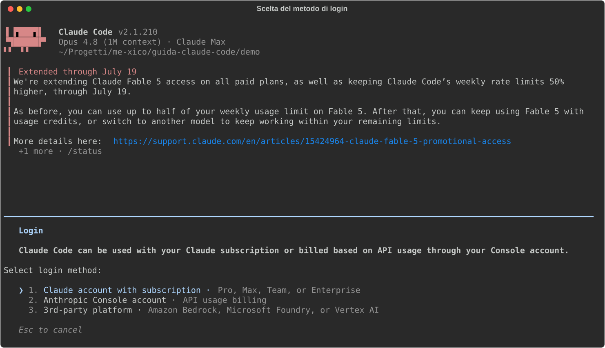

01 - Installation and first launch¶
Verified on July 15, 2026 against the official docs, with Claude Code 2.1.210. If any command doesn't match, check the setup docs.
In this chapter we install Claude Code, log in, and take a look at what
happens on first launch. By the end you'll have a working claude in your
terminal and you'll know where to look if something doesn't start.
Installation¶
What it is. The official installer is a simple script that downloads a
native binary and puts it on your PATH. It's the recommended method for a
specific reason: a binary installed this way updates itself in the
background, like a modern browser does, so after installation you never
have to think about it again.
How to install it. One command, depending on your system:
# macOS / Linux / WSL
curl -fsSL https://claude.ai/install.sh | bash
# Windows (PowerShell)
irm https://claude.ai/install.ps1 | iex
Where it ends up. The binary goes into ~/.local/bin/claude. It's a
self-contained executable: no Node.js required, nor any other runtime.
If you've seen the npm package around (npm install -g @anthropic-ai/claude-code),
know that it's the legacy route: it still works, but all it does is download
the same native binary. There's no reason to prefer it.
If you'd rather have your package manager handle updates instead (no
auto-update), the classic alternatives exist: Homebrew
(brew install --cask claude-code), WinGet, and signed apt/dnf/apk
repositories.
Verify. As soon as it's done, check that the binary responds:
$ claude --version
2.1.210 (Claude Code)
Automatic updates
A binary installed this way updates itself in the background, like a modern browser does: after this check you never have to think about it again.
If the command isn't found, the problem is almost always that
~/.local/bin is not on your shell's PATH.
Requirements and platform notes. You need macOS 13+ / Windows 10 1809+ / Ubuntu 20.04+ / Debian 10+ and 4 GB of RAM, requirements any development machine meets. Two notes are worth calling out:
- Native Windows: Git for Windows is optional, but it also installs a bash, and that enables Claude Code's Bash tool. Without it, Claude runs commands through PowerShell. It works, but most examples you'll find around (and in this guide) assume a POSIX shell.
- WSL: install Claude Code inside the Linux distribution (that is,
with the
curlscript from a WSL terminal), not from PowerShell. It has to live in the same world as the files you'll be working on.
Login and plans¶
How it works. The first time you run claude, before you can type
anything, the authentication flow kicks in: Claude Code opens your browser,
you authenticate there, and the terminal receives the credentials. This is
the choice screen that greets you:

The two options correspond to two different ways of paying:
- claude.ai subscription (Pro/Max): the simple route for personal use, OAuth via browser, no API keys to manage, fixed monthly cost.
- Claude Console (API): for usage-based or business billing, you pay for the tokens you actually use, with no hourly limits.
| Plan | Cost | Claude Code |
|---|---|---|
| Free | 0 $ | ❌ not included |
| Pro | 20 $/month | ✅ ~200 messages / 5 hours |
| Max 5x / 20x | 100 / 200 $/month | ✅ 5x / 20x the Pro limits |
| API | per token | ✅ no hourly limits |
How to read the table: subscription plans have a message budget that resets every 5 hours. To get started, Pro is enough: you only feel the limit under heavy use. If Claude Code becomes your main tool, Max 5x is the natural upgrade; the API makes sense when you need usage without hourly caps, or business billing.
Where the credentials end up. On Linux in
~/.claude/.credentials.json, with 0600 permissions (readable only by
you); on macOS in the system Keychain. You never need to touch them by
hand: to switch accounts without leaving the session there's /login, and
/logout to sign out.
First launch¶
Once login is done you land straight in the interactive prompt. No wizard,
no theme picker (you can change that later with /config): Claude Code
shows you the version, active model, and plan, and waits for your first
message.

Note the three items at the top of the screen (version, model, plan): they're the first thing to check when something behaves unexpectedly. Two commands to know right away:
/help, the list of available commands./doctor, the full diagnostics: it checks the installation, configuration, MCP servers, and update status. It also exists outside the session asclaude doctor, useful precisely when Claude won't start and you can't use the slash command.
VS Code extension (and the other interfaces)¶
For those who live in the editor there's the official extension: search for
"Claude Code" in the marketplace (publisher Anthropic, id
Anthropic.claude-code, requires VS Code 1.98+). Compared to the CLI it
adds a chat panel, side-by-side diffs with inline comments, checkpoints to
rewind your code, and permission management right from the prompt box.
One important detail to understand: the extension bundles its own copy of
the CLI, but shares the configuration: ~/.claude/settings.json, the
CLAUDE.md files, MCP servers, skills. In practice there is a single Claude
Code "identity" on your machine: everything you configure in the terminal
(ch. 02) automatically applies in the editor too, and vice versa.
There are also a desktop app (macOS/Windows/Linux) and Claude Code on web: same substance, different interfaces. This guide uses the CLI, which is where all the features live.
Updates¶
With the native installer the rule is: you do nothing. The binary checks
for and downloads updates on its own, in the background. If you want to
force an update manually there's claude update; to see how the last
attempt went, claude doctor.
The only choice you get to make is which release channel to follow.
It's configured in settings.json (the configuration file we'll cover in
detail in ch. 02; for personal settings it's ~/.claude/settings.json).
The complete file, in the minimal case, is this:
{ "autoUpdatesChannel": "stable" }
There are two possible values: latest (the default, you get new releases
as soon as they ship) and stable (about a week behind, so releases with
regressions get skipped before they reach you). If you installed with
Homebrew/WinGet/apt, there's no auto-update: you update with your package
manager, like any other package.
In short: curl | bash, log in with the browser, /doctor if
something looks off. Next chapter: where the configuration lives and how to
bend it to your project.